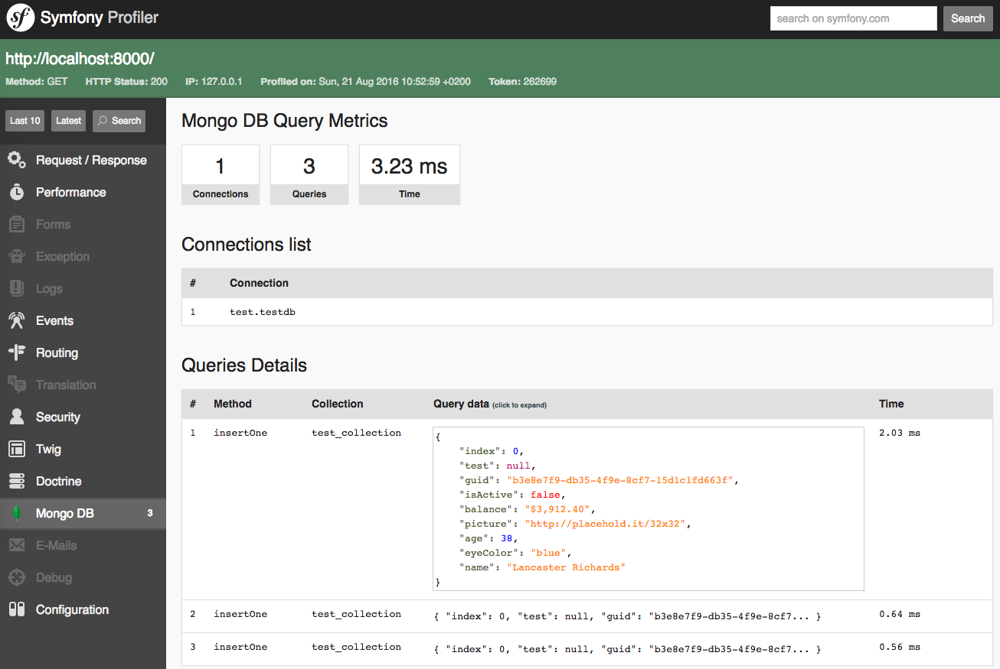

Adding Event Sourcing
to an existing PHP project
(for the right reasons)
Alessandro Lai / @AlessandroLai
Iacopo Pancotti / @siuvdlec
PUG Milano - January 10th 2018, Facile.it
Who we are?
PHP developers @ 
-

- Alessandro Lai
- @Jean85
- @AlessandroLai
- PHP UG Milan Coordinator
- PHP-FIG Secretary
Disclaimer 1/3:
It's a case history
- Just a brief theory explanation
- We bent the state of the art to our use case
- Let's jump into practical implementation details!
Disclaimer 2/3:
It's a group effort!
The Facile.it Shark team
Disclaimer 3/3:
We got help!
First things first:
What's Event Sourcing?
The prime example:
money transactions
- You save only the current state (the balance)
- Each operation completely rewrites the information
- What about concurrency???
-
We are addicted to software transactions,
but they are inherently fallible
With events, instead...
-
We store performed actions
(withdrawal, deposit) -
Concurrency is no longer a big issue
(negative balance) -
Aggregating events gives me the current state
(current balance)
And CQRS?
It's normally opposed to CRUD,
see Martin Fowler's article
It's a design pattern, it stands for:
- Command (write)
- Query (read)
- Responsibility
- Segregation
Story time!
In the real world...
- Projects start small and simple
-
Especially with PHP, a fast CRUD approach
is used 99% of the time - Inherent business complexity comes only with time, while adding new features
- Hard to justify adding event sourcing from the start
Project Background
Our use case
-
The Shark team works on the
Facile Partner Network (FPN) project - It's a B2B platform for car insurance brokering
-
We offer the platform to insurance agents
that already have their own physical business
Complex domain
- We handle the product after it's sold
- We handle customer relationships
- We have to be an adapter for a lot of processes
- Last but not least, we have a team of 40+ accounts
- The project is 5+ years old
Our issues
- Business rules evolve really fast!
- New reports are requested often
- We still have to provide historical data
-
We also had a small piece of functionality
that was having growing pains inside our RDBMS(MySQL + Doctrine)
Our solutions
- Gabriele
- MongoDB
- Event sourcing
Events in practice
Anatomy of an event
- Type
- Family
- Payload
- Metadata
{
"_id" : ObjectId("5898ab5a22c92d69123f7281"),
"type" : "agendaCreated",
"eventFamily" : "agenda",
"meta" : {
"createdAt" : ISODate("2017-02-06T17:59:05"),
"receivedAt" : ISODate("2017-02-06T17:59:06"),
"currentUserId" : 29877,
"taskId" : 3503425,
"productId" : 5937725,
...
},
"payload" : {
"currentUser" : {
"id" : 29877,
...
},
"task" : {
"id" : 3503425,
...
},
"product" : {
"id" : 5937725,
...
}
...
}
}
Type & Family
-
The type is the event name
It represents the kind of document that we will have
-
Family is a more generic grouping
(depends on business domain)
-
Helpful for searching/filtering:
you normally work with a specific list of events
Metadata
- We use it for search purposes
-
Indexes are a must, at least on
createdAt -
We can also use it to store system info
(user, origin, application...)
The payload
- Should contain all the data related to the event
- Remember, events are always in the past
-
How many things should I put in there?
When in doubt, do not omit
Storing events
-
We already used the (Symfony) Event Dispatcher
a lot to drive our business logic - We easily identified the points where we needed to store events
- Base event + decorators
- We didn't have enough confidence with MongoDB...
Real-time (delayed) storing
- ... so we used our (RabbitMQ) queue to delay the event storing and avoid failures in critical processes
-
In theory, events should be append only,
immutable and ordered in time... - We made this exception as an intentional trade-off
Generating events for the past
- In theory, you shouldn't do it...
- The trade-off allowed us to easily generate events for the past
- We had to avoid writing duplicates
- Deriving events from the current (lossy) state
It's time to read!
Projections
- Aggregated result of multiple events
-
They are produced replaying events one at a time,
and using them to reconstruct the desired result
Our implementation
Runner+RunStateProjector+ExecutorProjectionState
The (one and only) Runner
class Runner
{
public function run(ProjectorInterface $projector);
}
- Handles the cycle, one event at a time
-
Handles event filters provided by the
Projector - Iterates through the events, one at a time
The RunState document
Used by the runner to persist execution state
class RunState implements MongoDocumentInterface
{
/** @var string The Projector FQCN */
private $class;
/** @var bool */
private $stillRunning;
/** @var \DateTimeInterface */
private $lastRunAt;
/** @var Mongo\ObjectId */
private $lastMaxId;
/** @var \DateTimeInterface */
private $lastProjectedEventCreatedAt;
// ...
}
Runner::run()Pre-execution checks
$runState = $this->loadRunState($projection);
if ($runState->isStillRunning()) {
return $this->resetProjection($projector, $runState);
}
$iterator = $this->loadEventsIterator($projection, $runState);
if (! $iterator->valid()) {
return $this->updateRunStateOnAccomplished($runState, $lastEvent);
}
$firstEvent = $iterator->current();
if ($this->eventIsOlderThanLastProjected($runState, $firstEvent)) {
return $this->resetProjection($projector, $runState);
}
$this->updateRunStateOnStarted($runState);
// ...
Runner::run()The loop
do {
$lastEvent = $iterator->current();
$projection->projectAndSave($lastEvent);
if ($this->shouldStop($start, $projection)) {
$this->updateRunStateOnStopped($runState, $lastEvent);
break;
}
} while ($iterator->next());
$projection->normalizeAfterRun(
$firstEvent->getCreatedAt(),
$lastEvent->getCreatedAt()
);
$this->updateRunStateOnAccomplished($runState, $maxId, $lastCreatedAt);
The Projectors
interface ProjectorInterface
{
// event filters
public function getEventTypes(): array;
public function getAdditionalEventFilters(): array;
// projection execution
public function initializeProjector();
public function projectAndSave(Event $event): Result;
public function normalizeAfterRun(\DateTime $from, \DateTime $to);
}
The executors
The Projector delegates the calculations
to a group of Executor classes
interface ExecutorInterface
{
public function supportEventsType(): array;
public function execute(Event $event): Result;
}
class SomeProjector implements ProjectorInterface
{
public function projectAndSave(Event $event): Result
{
return $this->getExecutor($event)->execute($event);
}
}
Intermediate state and correlation
-
Executors must be idempotent:
i.e. if a bug produces a duplicated event, we must handle it gracefully -
We use a
ProjectionStatedocument
to store additional informations
class ProjectionState implements MongoDocumentInterface
{
/** @var string The Projector FQCN */
private $class;
/** @var string */
private $correlationId;
/** @var mixed */
private $data;
/** @var \DateTime|null */
private $expireAt;
}
Reducing the amount of data
-
The
Executorshould delete theProjectionStateas soon as it's no longer needed -
ProjectionStates::$expirationDate
makes data disappear
db.projection_state.createIndex(
{ "expireAt": 1 },
{ expireAfterSeconds: 0 }
);
The real trick: pushing state away
-
Every class is stateless:
no properties contain data, only dependencies -
When we have state
(RunState,ProjectionState, the projection itself) we save it as documents on MongoDB
Practical issues
Duration of a projection
-
Since events' collection grows really fast,
projections can take a very long time to complete from the beginning -
Long running processes are not great with PHP
We found multiple memory leaks (gc_collect_cycles,ext-mongodb)
Runner execution
- We execute the runner in short intervals
-
We check if an other instance of the projector is already running
We use the Symfony'sLockableTrait
Updating past events
-
Especially early in the development phase,
we forgot to add some payload data... -
Since we did that trade-off to start with,
we were able to fix it - Solution: fix events + fix code + reset projection
-
To avoid report outages,
we started to take snapshots of projected data
Projections and code reuse
Due to CQRS and our objects' architecture,
reusing code between projections is impractical
What we gained
We reached our goal!!!
- We added MongoDB to our tech stack
- We gained "time traveling" super-powers!
-
We obtained an easy way to produce
new complex reports with historical reliability
Projection reuse
A projector can produce an intermediate result:
a simple denormalization that can be easily queried
Events Projector Projection (intermediate)
Projection aggregation Final result (snapshot)
Complexity splitted
Small context, easily testable
| Runner | ||
| Projector1 | Projector2 | Projector3 |
| Executor1a | Executor2a | Executor3a |
| Executor1b | Executor2b | Executor3b |
| ... | ... | ... |
Debug superpowers
Since we have events, we know EVERYTHING
Investigating a strange bug report
is now easier than ever
Our Symfony bundle
-
facile-it/mongodb-bundle -
Barebone integration with
ext-mongodb -
Nice profile addon

Thanks!
Contacts
- alessandro.lai85@gmail.com
- alessandro.lai@facile.it (we are hiring!)
- @Jean85
- @AlessandroLai
Attributions
- money, flickr photo by khrawlings shared under a Creative Commons (BY-NC) license
- Going to a movie that Doug chose - one of the Little Things....., flickr photo by Bennilover shared under a Creative Commons (BY-ND) license
- window2, flickr photo by Pascale Doria shared under a Creative Commons (BY) license
- mess, flickr photo by i ♥ happy!! shared under a Creative Commons (BY) license
Questions?
Additional references
-
Greg Young - Event Sourcing
Talk - GOTO 2014 conference -
Mathias Verraes - Messages over Structure
Keynote - Neos 2017 conference -
Martin Fowler - The Many Meanings of Event-Driven Architecture
Keynote - GOTO 2017 conference -
Marco Pivetta - Basic CQRS and Event Sourcing with Prooph
Workshop - WebSC 2017